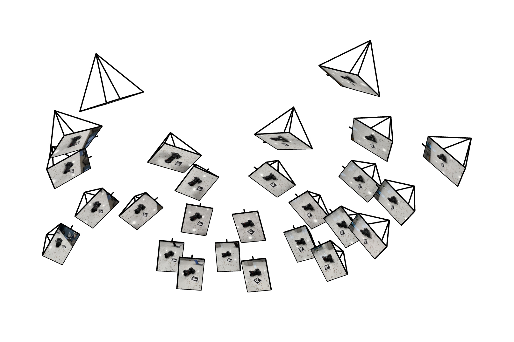
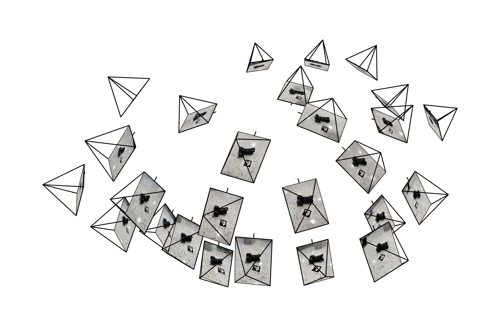
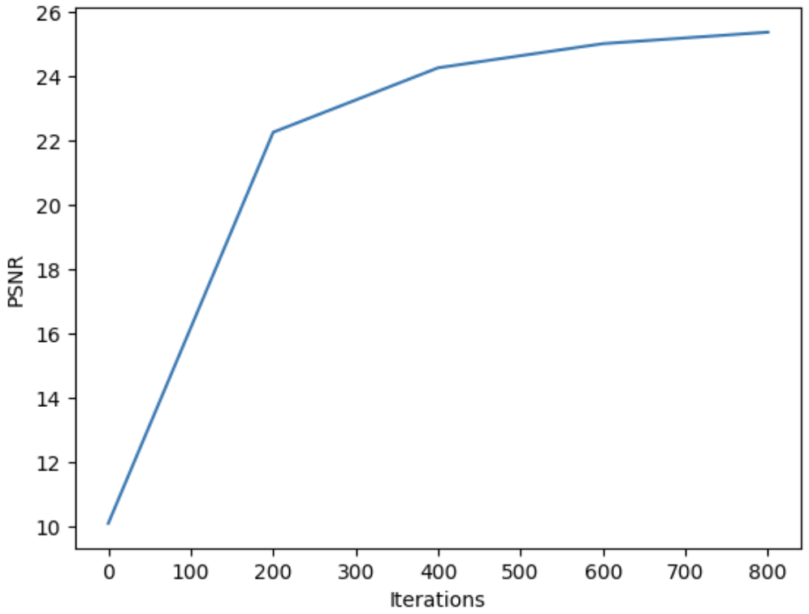
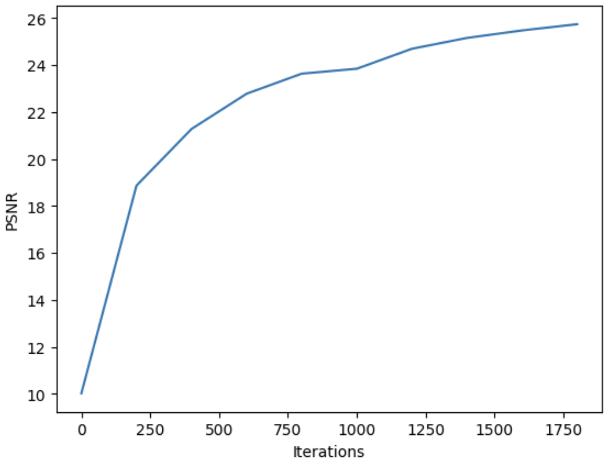
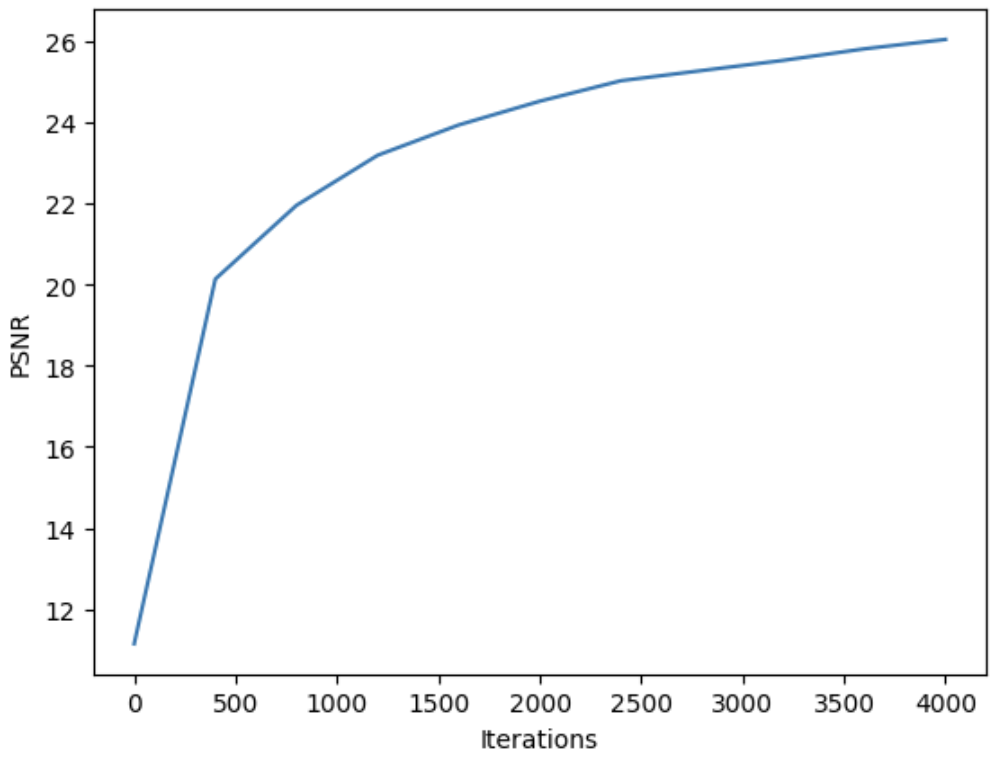
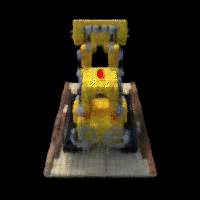
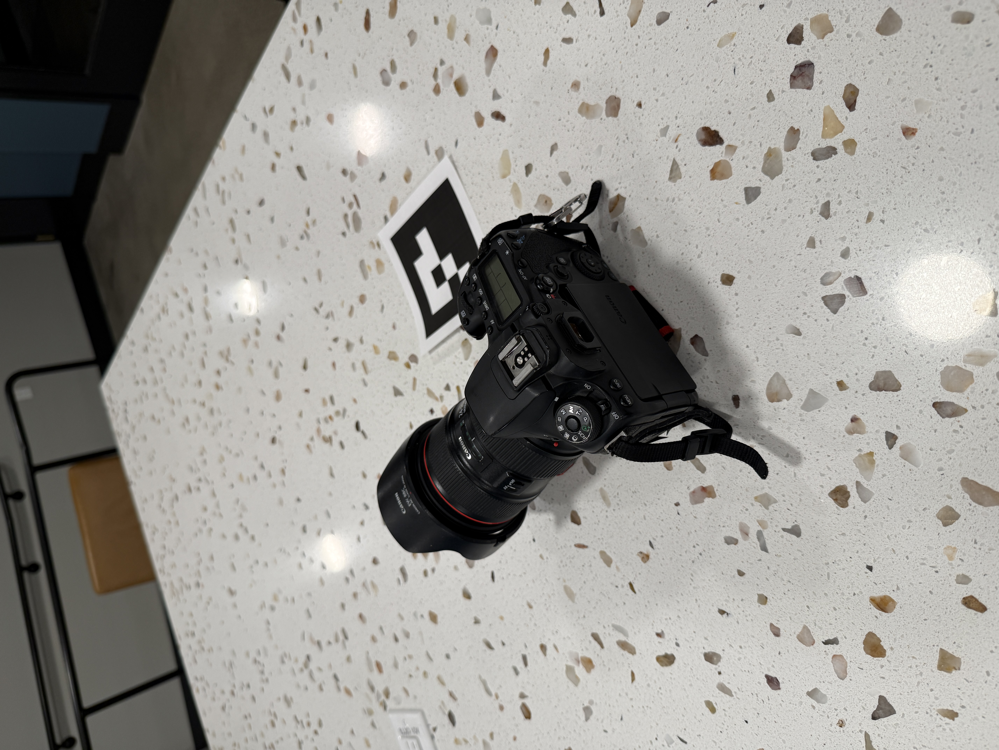
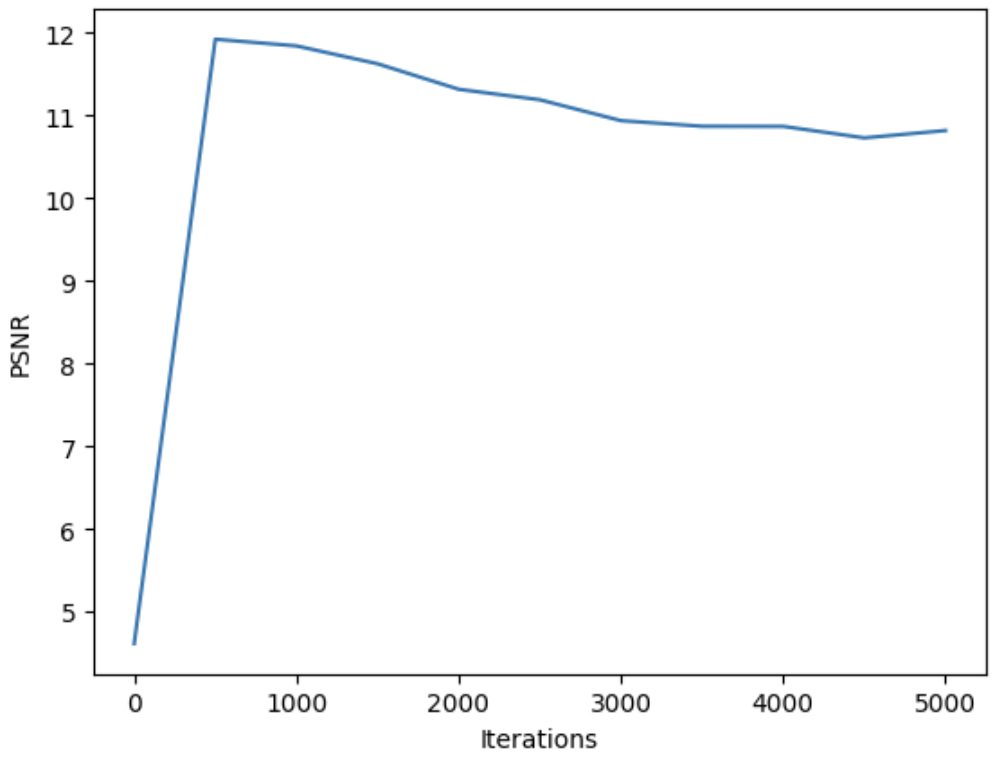
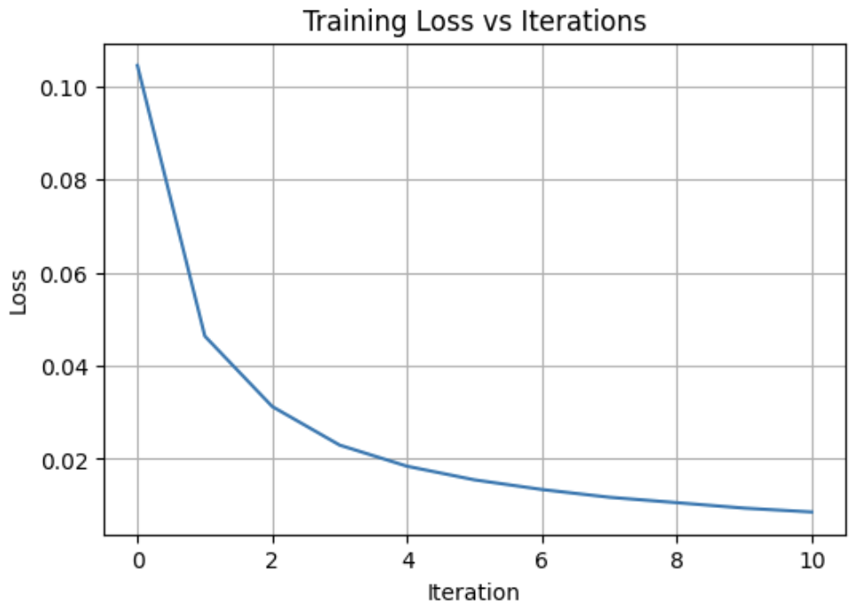

PROJECT FOUR
Part 0.3: Estimating Camera Pose
Below, we visualize the camera poses in Viser as a 3D cloud of frustums, each representing the position and orientation of a training image.


Below, we visualize the camera poses in Viser as a 3D cloud of frustums, each representing the position and orientation of a training image.
In this part, I implemented a 2D neural field by training an MLP with sinusoidal positional encoding to map normalized pixel coordinates to RGB values.
Model architecture:
MLP (
PosEnc(10)
Linear(42 → 256)
Linear(256 → 256)
Linear(256 → 256)
Linear(256 → 3) + Sigmoid )
Hyperparameters for given image:
Optimizer: Adam
Learning rate: 1e-3
Width: 256
Batch size: 10,000
Iterations: 1,000
Logging frequency: 200
Training progression (1,000 iterations)

Original
L=2, hidden_dim=64 (left); L=2, hidden_dim=256 (right)
L=10, hidden_dim=64 (left); L=10, hidden_dim=256 (right)
PSNR curve for given image
Hyperparameters for choice image:
Optimizer: Adam
Learning rate: 1e-3
Width: 256
Batch size: 10,000
Iterations: 2,000
Logging frequency: 200
Training progression (2,000 iterations)

Original (left); L=10, hidden_dim=256 (right)
PSNR curve for choice image
Data and Camera Setup:
I load the Lego dataset from the provided .npz file and normalize all images to [0,1]. The image resolution (H,W) is extracted from the training set, and I construct the camera intrinsic matrix K using the given focal length and an image-center principal point. The dataset also provides the camera-to-world matrices for train, validation, and test splits, which are used later to generate rays from pixels.
Part 2.1: Create Rays from Cameras
In this part I implement the functions needed to convert pixel coordinates into 3D rays. apply_tf applies a full 4×4 camera-to-world transform to 3D points. uv_to_cam back-projects pixel coordinates into the camera frame using the inverse intrinsics matrix. uv_to_ray combines these steps: it maps pixels to camera space, transforms them to world space, extracts the camera origin, and computes normalized ray directions.
Part 2.2: Sampling
I implement random ray sampling for training and full-image ray generation for validation. sample_random_rays uniformly samples pixel indices, converts them to ray origins and directions, and returns the corresponding RGB targets. sample_all_rays builds a full grid of all pixel centers and produces rays for the entire image. sample_along_rays takes ray origins/directions and produces evenly spaced 3D sample points between near and far bounds for volume rendering.
Part 2.3: Putting the Dataloading All Together
I create a RaysData class to organize all ray-related preprocessing. In the constructor, I convert inputs to tensors, compute a stable CPU inverse of the intrinsics, and move everything to the target device. I precompute all rays using sample_all_rays and store flattened rays, pixel coordinates, and colors for efficient lookup.
Part 2.4: Neural Radiance Field
I implement the NeRF architecture with separate positional encoders for 3D positions and viewing directions. The model uses a deep MLP with a skip connection to produce two outputs: density from position features and color from both position and direction features. The direction branch is concatenated with a transformed feature from the position network. All linear layers use Kaiming initialization, and the density head is biased for stable early training.
Part 2.5: Volume Rendering
I implement discrete volume rendering by converting densities to alpha values, computing cumulative transmittance, and producing weighted RGB sums along each ray. The forward pass (test3d) samples points, evaluates the NeRF, and applies the renderer. The training loop repeatedly samples random rays, renders predictions, minimizes MSE, logs validation results, and saves checkpoints. Helper functions render full images, evaluate PSNR across checkpoints, and generate a novel-view video using the trained model.
Cameras, rays, and samples visualized in Viser
Training progression (4,000) iterations
PSNR curve for lego model
Novel spherical rendering
In this part, I trained a NeRF on my own captured dataset by using the calibrated intrinsics, estimated poses, and undistorted images from Part 0.
I struggled to find hyperparameters that worked for my dataset. I initially tried identical hps to the lego dataset and that result is what you see below. I tried adjusting near and far to the recommended values of 0.02 and 0.5, as well as experimenting with other values such as 0.15 to 1.2 but none yielded as good of results. I also experimented with iterations, number of samples/ray, and the learning rate.
Original
/camera_iteration_0.jpg)
/camera_iteration_1000.jpg)
/camera_iteration_2000.jpg)
/camera_iteration_3000.jpg)
/camera_iteration_5000.jpg)
Training progression (5,000 iterations)
PSNR curve for choice model
Training loss for choice model
/camera_iteration_5000.gif)
Novel spherical rendering